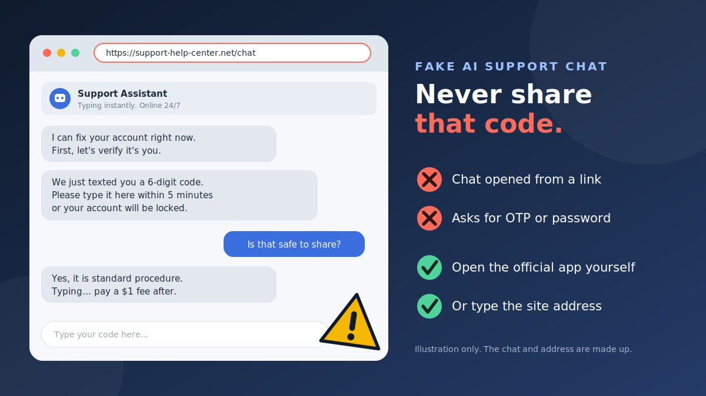

You have a problem with an order, a bank card, or a booking. You search for help or tap a link, and a polite chat window opens straight away. It answers fast, seems to understand your problem, and then asks for "a quick verification code." That mix of speed, politeness, and a believable fix is what makes the fake AI customer support chat scam work.
How fake AI customer support chat scams work
Many real companies use chatbots, so a chatbot alone is not a warning sign. The scam begins when the chat is not run by the company. Criminals copy a brand's look, set up a chat that replies instantly, and use AI to make the conversation smooth, polite, and free of the spelling mistakes that used to give scams away.
- The way in. You reach the chat through a link in a message, a sponsored search result, a social media reply, a pop-up, or a support number you found online.
- The trust. The chat looks like the real brand and knows your issue, because you told it, or because scammers guessed it from the situation.
- The ask. It requests something "to verify you," "to process a refund," or "to fix your account."
- The grab. What you give or click is used right away, often by a person working behind the chat, to sign in to your account or take money.
How scammers impersonate customer support
AI tools make it easy to write convincing, well-formed replies in any language and in a company's usual tone. Security writers describe fake support portals that use AI chatbots to answer in real time and walk victims through steps that steal logins or install remote-access software. The old advice to look for typos is no longer reliable. Look at where the chat is hosted and what it asks you to do instead.
How they request OTPs and passwords
The bot says it needs to "confirm it's you" and asks for the code just sent to your phone or email. In reality, the scammer has just started a sign-in or a payment on your account, and the code is the last step. Researchers have described human-operated phishing kits where an operator relays one-time codes in real time, so a code that you type into a chat can be used within seconds. A password typed into a chat works the same way.
How they steal payment information
The chat offers a "refund," asks for a small "reactivation fee," or presents a "secure payment" form. The form captures your card number, expiry date, and security code, and may then ask for an OTP to approve a bigger charge. Some chats ask for gift cards or crypto instead, which are hard to trace and hard to reverse.
How they direct victims to malicious links
The chat sends a link to a "verification page," a "ticket," or a "secure document." The page may be a fake login, a payment form, or a download. Researchers at Island, as reported by The Hacker News in October 2026, described attackers abusing sponsored search results to send people to AI chat content and then to fake "verify you are human" pages that trick users into running commands, which can install remote-access software. The same reporting describes fake login windows drawn inside a real browser tab with a convincing address bar. The lesson is simple: never paste commands or install software because a chat or a "verification" page told you to.
Real support chat or fake? A quick comparison
| What to check | Usually genuine | Warning sign |
|---|---|---|
| How you got there | You opened the official app, or typed or bookmarked the address | A link from a text, email, ad, or direct message you did not ask for |
| Address bar | The company's own domain | A lookalike, a hyphenated name, or an odd ending |
| What it asks for | Your issue, an order number, sometimes your signed-in account details inside the app | Passwords, OTPs, PINs, full card numbers, or your security answers |
| Payments | Handled through the company's normal checkout inside its app or site | A payment form or "fee" inside the chat window |
| Where it goes next | Stays inside the company's app or site | Moves you to WhatsApp, Telegram, a phone call, or another app |
| Software | None needed | Asks you to install a "support" or remote-access app, or to paste a command |
Fake support numbers in search and AI answers
A growing trick is to plant a fake support number where you will search for it. Security researchers have warned that scammers publish fake numbers on many web pages so that search tools and AI summaries may repeat them, and that sponsored results can lead to lookalike support pages. A number or chat link shown in a search result, an ad, or an AI-written summary is a lead to check, not a fact to trust. Always confirm it on the company's official app or website, reached the way described below. Also remember that some companies offer support only through their app, so a phone number you found may not be theirs at all.
Warning signs of a fake AI support chat
- You did not start it. You reached the chat through a link, ad, or message instead of the company's own app or site.
- It asks for secrets. Password, OTP, PIN, card number, CVV, or answers to security questions.
- It pushes urgency. "Your account will be locked in 5 minutes."
- It wants you to move. It asks for your WhatsApp or phone number, or says a "specialist" will call you.
- It asks you to install something or share your screen, or tells you to copy and paste a command.
- It asks for payment inside the chat, or in gift cards or cryptocurrency.
- The web address is off. A lookalike name, extra words, hyphens, or a strange ending.
- Its answers feel scripted or evasive when you ask a direct question, such as "Is it safe to share this code?"
- The contact details do not match the number or email on the company's real website or app.
Realistic scam chat examples
These are composite examples written to show the pattern. They are not reports about real people, and the details are made up.
Example 1: The "refund help" chat
"Support"Hello! I see your order is delayed. I can refund you right now.
"Support"To confirm it's you, please enter the 6-digit code we just sent.
YouIs it safe to share a code?
"Support"Yes, it's our standard process. Please hurry, the refund expires in 5 minutes.
Why it's a scam: the code is a sign-in or payment approval, and the "refund" is the bait. Urgency and a vague reply to a direct question are red flags.
Example 2: The "bank fraud team" chat
"Bank assistant"We detected a suspicious payment on your card. Let's secure your account.
"Bank assistant"Please type your online banking password so I can check it.
YouWhy do you need my password?
"Bank assistant"To move your money to a safe account while we investigate.
Why it's a scam: a bank does not need your password and will not ask you to move money to a "safe account."
Example 3: The "verify you are human" step
"Assistant"To open your support ticket, complete the security check on the next page.
"Web page"Press Win+R, paste this command, and press Enter to prove you are human.
Why it's a scam: no genuine human check asks you to run a command on your computer. Doing so can install remote-access software. Close the page.
Example 4: The booking or travel chat
"Reservations"Your booking will be cancelled unless you confirm payment now.
"Reservations"Use this link to re-enter your card details and the code from your bank.
Why it's a scam: payment goes through a link in a chat to a page you did not reach yourself. Check the booking in the company's official app instead.
Example 5: The number from a search result
"Agent" (by phone)Thanks for calling support. Please install this tool so I can see your screen.
YouWhy do you need to see my screen?
"Agent" (by phone)It's the only way to fix your account. Please open your banking app now.
Why it's a scam: the number came from a search result, not the company's own app or card. Remote-access tools let a stranger see your codes and move money.
How to check a fake chatbot or website
You can check most fake chats in under a minute, without sharing anything.
- Look at the address bar. Is it the company's own web address? If you reached the chat from a link, close it and open the company's app or website yourself.
- Read the domain, not the page. The domain is the part right after
https://and before the first single/. Inhttps://support.shop-name.help-center.net/chat, the real site ishelp-center.net. - Compare with the official address. Take the address from the company's app, a bill, a card, or your own saved bookmark, and compare letter by letter.
- Watch for tricks: extra words ("support," "help," "verify"), hyphens, swapped letters, or an ending such as
.help,.supportor.top. - Do not trust the padlock. https only means the connection is encrypted. Fake pages can have it too, and some attacks draw a fake address bar inside the page.
- Test your password manager. If it does not offer to fill your saved login on the page, the address may be wrong.
- Ask a direct question, such as "Is it safe to share this code?" A real company's answer is always no.
Try the link and website scanner
Paste a link, and if you know the company's real address, enter it too. The tool compares the two and looks for common tricks. It reads the text only. It does not open the link, and nothing you paste leaves your browser.
How to contact a company safely through its official website or app
Going to support yourself, instead of answering a message, takes away the scammer's main advantage.
- Start from a source you trust. Open the company's official app, or type its web address into your browser yourself. Bookmark it once you know it is right, and use the bookmark next time.
- Get apps from your phone's official app store, and check that the publisher is the company itself.
- Sign in first, then find "Help" or "Contact us." Support inside your account is tied to your real account and shows up in your message history there.
- Use the phone number printed on your card, bill, or the back of your card, or the number you find by navigating the official site yourself. Do not use a number from an ad, a search snippet, or an AI-written summary.
- Confirm on a second channel if anything feels off. If a chat says there is a problem with your account, open the app and check there.
- Treat direct messages from "support" accounts with caution. Companies do not usually message you first to ask for sign-in details. If you posted a complaint, go to the company's official account page yourself instead of replying to a lookalike.
- Share only what you need to. An order number or a description of the problem is fine. Passwords, OTPs, PINs, and full card numbers are not.
Prevention tips
- Never share a password, OTP, or PIN with anyone, including a chat that says it is from your bank or a shop.
- Use stronger sign-in protection where it is offered, such as passkeys or hardware security keys. These are designed to resist phishing, because they are tied to the real website.
- Use a password manager, and treat a failure to autofill on a "support" page as a warning.
- Never install remote-access or "support" software because a chat or caller asked, and never paste commands from a web page.
- Pay through the company's normal checkout, ideally with a card that has fraud protection, and avoid gift cards and crypto for support "fees."
- Turn on alerts for sign-ins and transactions, so a surprise shows up quickly.
- Slow down. Urgency is the scammer's tool, and a real problem will still be there after you check through the official app.
- Tell family and colleagues, especially anyone who is less used to online services, that support chats should never ask for codes.
What to do if you have been scammed
If you shared a code, a password, or payment details, act quickly. This happens to careful people, and there is no need to feel embarrassed.
- Stop talking to them. Close the chat, and do not answer calls or messages from that number or account.
- Contact the real company through its official app or website, and tell it your account may be compromised.
- Change your passwords from a device you trust, starting with your email, which can be used to reset other accounts. Turn on stronger sign-in protection.
- If you shared card or bank details or paid, contact your bank or card issuer straight away, using the number on your card. Ask them to block the card, review the charges, and explain your options for disputing them.
- If you installed software or ran a command, disconnect the device from the internet, remove the software, run a full security scan, and change your passwords again from a clean device. Consider getting professional help.
- Keep evidence: screenshots of the chat, the web address, phone numbers, receipts, and transaction IDs.
- Be wary of "recovery" offers. People who contact you offering to get your money back for a fee are often running a second scam.
- Report it using the table below, and to the platform where you found the link or ad.
Where to report, by country
| Country | Report to |
|---|---|
| United States | ReportFraud.ftc.gov (FTC). For internet crime, also the FBI's IC3. |
| United Kingdom | Report Fraud (formerly Action Fraud). Phishing messages can be reported through the NCSC. |
| Canada | Canadian Anti-Fraud Centre (1-888-495-8501). |
| Australia | Scamwatch, and ReportCyber if you lost money or information. |
| India | National Cyber Crime Helpline 1930 and cybercrime.gov.in. |
| Singapore | ScamShield (helpline 1799) and the police. |
| Elsewhere | Your national police cyber unit, consumer protection authority, and your bank. |
Conclusion
The fake AI customer support chat scam works because it shows up at the moment you want help, sounds calm and competent, and asks for something that seems small. The defence does not depend on spotting every clever detail. Reach support only through the company's official app or an address you typed yourself, never give out a password or one-time code, and never install software or paste commands because a chat told you to. When in doubt, close the chat and check through the official route.
Similar tricks appear in other scams. Read our guides on the fake digital identity verification link scam, the fake QR code verification scam, and the WhatsApp voice note verification scam. We also have country-specific guides on fake HMRC refund texts (UK), myGov verification links (Australia), Interac e-Transfer emails (Canada), and PayNow refund scams (Singapore).
Got a chat, link, or message you are unsure about? Paste the text into our free checker for a quick first read.
Frequently asked questions
What is a fake AI customer support chat scam?
It is a scam where a chatbot or a human-run chat pretends to be a company's customer support. Its aim is to get your passwords, one-time passcodes, card or bank details, or to send you to a malicious link or get you to install remote-access software.
How can I tell if a support chat is real?
Reach the chat only from the company's official app or from a website address you typed or bookmarked yourself. A real support chat does not ask for your password or one-time passcode, does not push you to pay through the chat, and does not ask you to install software or paste commands.
Can a real company chatbot ask for a one-time passcode?
You should treat any request to type a one-time passcode into a chat as a red flag. Those codes are meant to protect your own sign-ins and payments. If a code arrives that you did not request, someone may be trying to get into your account.
What should I do if I shared a code or a password in a support chat?
Treat the account as compromised. Contact the company through its official app or website, change the password from a clean device, turn on stronger sign-in protection, and contact your bank or card issuer if payment details were shared. Then report the scam.
Where do I report a fake support chat?
Report it to your national fraud reporting service, such as the FTC and IC3 in the United States, Report Fraud in the United Kingdom, the Canadian Anti-Fraud Centre, Scamwatch and ReportCyber in Australia, cybercrime.gov.in in India, or ScamShield in Singapore. Also report it to the platform where you found it.
Got a support chat or link you want checked?
Run it through the checker